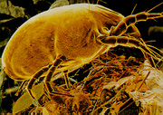

Toxicology Problem Set
Problem 2: Hazards and sources
One of the items below is a hazardous substance and the other four are sources of a hazardous substances. Which one is a hazardous substance?
A. clogged furnace B. cigarette C. a dog D. paint applied before 1978 E. dust mite parts
A hazardous substance is a chemical that causes harm to our health. Dust mite parts cause an allergic reaction in many people. The source of dust mite parts is dust mites. Dust mites live in carpets, bedding and curtains. Some other common hazards and their sources are: 
© AllerGuard Pte Ltd


The Southwest Environmental Health Sciences Center
The Biology Project
The University of Arizona
Tuesday, September 16, 1997
Contact the Development Teamhttp://www.biology.arizona.edu
All contents copyright © 1997. All rights reserved.